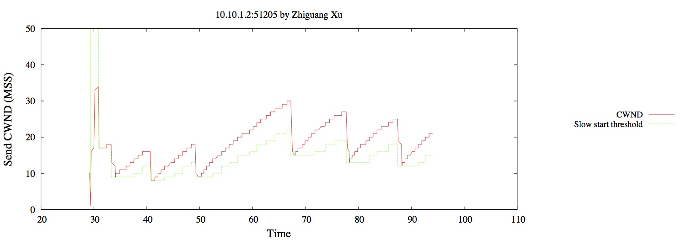

This lab contains programming components and self-exploratory avtivities. Therefore, I highly recommend you to start working on it sooner than later.
See Pre-lab5 for details.
See Pre-lab5 for details.
See Pre-lab5 for details.
In this lab, we will generate three TCP flows between the two end hosts with a router in between, and use them to observe the behavior of the TCP congestion control algorithm.
First, on Receiver node, run the following to start the iperf server.
iperf -s
Next, on Sender node, run the TCP probe module that you downloaded in pre-lab5. The data it collects from all three TCP flows will be all saved in the file tcpprobe.dat in the folder /tmp.
dd if=/proc/net/tcpprobe ibs=128 obs=128 | tee /tmp/tcpprobe.dat
Open another SSH terminal to the "sender" node and run
iperf -t 60 -c receiver -P 3
to start the TCP flows. Here
-t 60 says to run for 60 seconds-c receiver says to send traffic to the host named "receiver"-P 3 says to send 3 parallel TCP flowsYou will see a final status report in the iperf window after the iperf sender finishes, which should take about a minute. In the window where the TCP probe is running, you should see a line of output for each TCP packet. Stop TCP probe by pressing CTRL+C.
As I said above, the output of the TCP probe will be saved in /tmp/tcpprobe.dat on the sender. Use scp to transfer this file to your local laptop for processing.
If you are still not sure how to do the file transfer, check back what you did in Lab 2.
Open tcpprobe.dat on your local computer, the following should be likely what you see:
88.153283837 10.10.1.2:51205 10.10.2.2:5001 44 0x72e3b71a 0x72e2f6ca 16 12 341760 206 29312 88.165276815 10.10.1.2:51205 10.10.2.2:5001 44 0x72e3bcc2 0x72e2f6ca 16 12 341760 206 29312 88.177368074 10.10.1.2:51205 10.10.2.2:5001 44 0x72e3bcc2 0x72e2f6ca 15 12 341760 207 29312 ... ... 88.322616545 10.10.1.2:51207 10.10.2.2:5001 44 0x81cb5225 0x81caa2cd 17 12 336000 208 29312 88.334871907 10.10.1.2:51207 10.10.2.2:5001 44 0x81cb57cd 0x81caa2cd 17 12 336000 205 29312 88.346999896 10.10.1.2:51207 10.10.2.2:5001 44 0x81cb57cd 0x81caa2cd 16 12 336000 203 29312 88.359135417 10.10.1.2:51207 10.10.2.2:5001 44 0x81cb5d75 0x81caa2cd 16 12 336000 201 29312 88.371254962 10.10.1.2:51207 10.10.2.2:5001 44 0x81cb5d75 0x81caa2cd 15 12 336000 200 29312 88.383238328 10.10.1.2:51207 10.10.2.2:5001 44 0x81cb631d 0x81caa2cd 15 12 336000 199 29312 ... ... 88.528702143 10.10.1.2:51206 10.10.2.2:5001 44 0x7efc0be9 0x7efb45f1 13 12 301184 208 29312 88.540836099 10.10.1.2:51206 10.10.2.2:5001 44 0x7efc0be9 0x7efb45f1 12 12 301184 203 29312 ... ...
The TCP module probe records a line of output every time a packet is sent, if either the destination or the source port number in the TCP packet header is 5001 (since we loaded it with the port=5001 option in the last step of pre-lab5).
Each line of output will include the following 11 fields, in order:
| Field | Explanation |
|---|---|
| Time | Time (in seconds) since beginning of probe output |
| Sender | Source address and port of the packet, as IP:port |
| Receiver | Destination address and port of the packet, as IP:port |
| Bytes | Bytes in packet |
| Next | Next send sequence number, in hex format |
| Unacknowledged | Smallest sequence number of packet send but unacknowledged, in hex format |
| Send CWND | Size of send congestion window for this connection (in MSS) |
| Slow start threshold | Size of send congestion window for this connection (in MSS) |
| Send window | Send window size (in MSS). Set to the minimum of send CWND and receive window size |
| Smoothed RTT | Smoothed estimated RTT for this connection (in ms) |
| Receive window | Receiver window size (in MSS), received in the lack ACK. This limit prevents the receiver buffer from overflowing, i.e. prevents the sender from sending at a rate that is faster than the receiver can process the data. |
By looking at your TCP probe data, you can observe the behavior of the TCP congestion control algorithm.
As you can see, the raw data file tcpprobe.dat is not yet ready for plotting because:
,) to facilitate further processing tasks.And most importantly, all three flows (i.e. from sources 10.10.1.2:51205, 10.10.1.2:51207, and 10.10.1.2:51206 are mixed in one file. They must be separated.
Notice that your source port numbers might be different than
51205,51206, and51207.
So, now you are asked to write a Java program to process tcpprobe.dat in the following way:
Name your Java program Process_TCPProbe_yourinitial.java which must run in the following way:
java Process_TCPProbe_yourinitial tcpprobe.dat tcpprobe_xxxxx_comma.dat tcpprobe_yyyyy_comma.dat tcpprobe_zzzzz_comma.dat
The program takes four arguments: one raw data file as input and three output files. Of course, please replace the placeholder xxxxx, yyyyy, and zzzzz with the actual source port numbers in your data file.
The following is a sample of one of the output files for your reference:
... 93.324970324,10.10.1.2:51205,10.10.2.2:5001,32,0x72e71882,0x72e6a762,20,15,341760,165,29312 93.337148466,10.10.1.2:51205,10.10.2.2:5001,32,0x72e71882,0x72e6ad0a,20,15,341760,165,29312 93.349120821,10.10.1.2:51205,10.10.2.2:5001,32,0x72e723d2,0x72e6b2b2,20,15,341760,166,29312 ...
Test your program thoroughly and
File-transfer the three output files produced by your program back to the Sender node using scp.
Again, if you are still not sure how to do the file transfer, check back what you did in Lab 2.
Hint: Do
mgetto transfer files from Sender node to your local computer. Domputfor the opposite.
Also, very importantly, make sure you save them into the /tmp folder on Sender.
Submit your Java program to me on BlazeVIEW.
Note, zero point will be assigned if any of the following happens:
I receive anything other than the Java source code.
The Java source code is not named correctly.
The Java source code fails to compile.
I will simply compile it by running javac Process_TCPProbe_yourinitial.java. Make sure you do so before turning your program in. A common problem could be caused by the package...; line added by some IDEs such as jGrasp or Eclipse that you happen to use. My suggestion to you is DO NOT USE THEM to begin with. 😬
Also, VERY VERY IMPORTANTLY, make sure that you don't hard-code the source port numbers ANYWHERE in your Java program. You must obtain them from the last three command-line arguments tcpprobe_xxxxx_comma.dat, tcpprobe_yyyyy_comma.dat, and tcpprobe_zzzzz_comma.dat.
Admittedly, the tasks above could have been done very easily using one at most two UNIX commands. However, this class does not have CS 3300 as its prerequisite, therefore, I have to ask you all to do them in Java programmatically.
In Sender terminal,
sudo su cd /tmp
Then do the following.
First install gnuplot:
apt-get -y install gnuplot
Download the file dash_plot.gnu designed for lab 4 that we skipped:
wget -nH --no-parent "http://witestlab.poly.edu/repos/genimooc/run_my_experiment/dash_experiment/src/client/dash_plot.gnu"
Rename it to sawtooth_plot.gnu by running
mv dash_plot.gnu sawtooth_plot.gnu
Edit sawtooth_plot.gnu and run it in the following way such that it plots the sawtooth figure for the first TCP stream file tcpprobe_xxxxx_comma.dat.
gnuplot sawtooth_plot.gnu
The resulting figure should be named sawtooth_xxxxx.eps where xxxxx is the source port number of your first TCP flow. Make sure the title of the figure includes your full name or no point will be assigned.
The original
dash_plot.gnuis very self-explanatory. Use it as your template when making changes. It is going to be a "trial and error" process that might take a while, especially if you have to do the file editing on your local computer and transfer the edited one back toSenderusingscp.Hint:
- In the original .gnu script, two figures are generated. Here in this lab, we only need to generate one.
- To change to ratio of the x-axis and y-axis, you simply need to do
set size 2, 1
Install texlive-font-utils which contains epstopdf.
Viewer for
epsfiles are readily available on Linus and Mac computers. However, unfortunately, not on Windows. Therefore, we need to convert them to PDF format.
apt-get install texlive-font-utils
Convert the figure in the eps format to PDF with epstopdf.
epstopdf sawtooth_xxxxx.eps <<-- replace xxxx with the actual source port number
The following shows a sample plot for your reference.

Do the same for the other two TCP flows.
Finally, file transfer all three PDFs to your local computer.
Submit the following five files:
The Java source code file for processing the saw TCP Probe output. Detailed requirements for this program could be found in Section 2.3 above.
Process_TCPProbe_yourinitial.javaThe script that you edited for plotting:
sawtooth_plot.gnuand three plots to show sawtooth for TCP congestion control:
sawtooth_xxxxx.pdfsawtooth_xxxxx.pdfsawtooth_zzzzz.pdfWhere xxxxx, yyyyy, zzzzz are the source port numbers of your three respective TCP flows. Again, make sure that the title of each plot you submit includes your full name, or no points will be assigned.